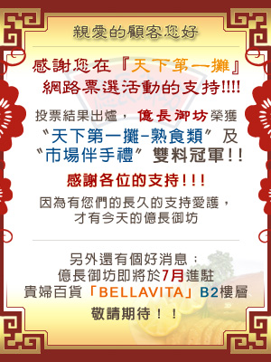

親愛的顧客您好: 一年一度的『天下第一攤』網路票選活動又來了!!!! 自99年4月21日6:00PM至99年5月24日12:00PM為止 請上【WWW.2010marke t.com.tw】〝天下第一攤〞及〝市場伴手禮〞 支持堅持用心的 億長御坊 ，謝謝各位!!! 因為有您們的長久的支持愛護，才有今天的億長御坊! 懇請大家踴躍號召親朋好友一天一票讓億長再度蟬連天下第一攤寶座!感謝您的支持!!!
